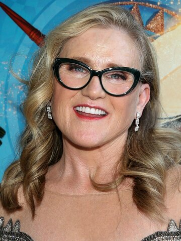

Bart Simpson
Bart is the mischievous, rebellious, misunderstood, and disrespected eldest child of Homer and Marge Simpson.
Sound Clips:

Nancy Cartwright

Bart is the mischievous, rebellious, misunderstood, and disrespected eldest child of Homer and Marge Simpson.
Nancy Cartwright